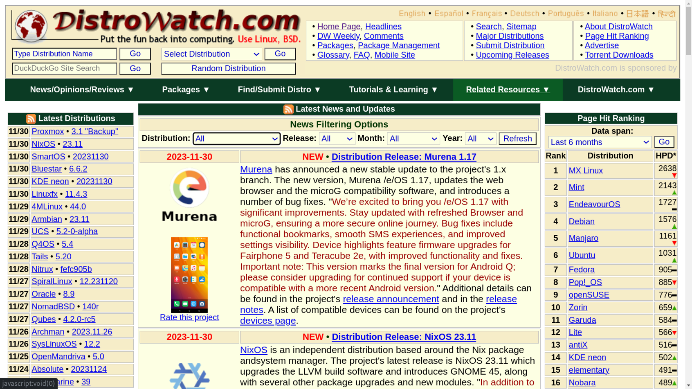

You wanna know what grinds my gears? Bad UX Design.
It appears that when it comes to designing a logical UX for some online services and sites, there's been somewhat trend going on where everything else get bedazzled except for UX.
This is surprising due to how much UX matters when it comes to retaining a user base. Down below, I will be examining a webiste that I use often that is suffering from an ugly and ineffecient UX design.
Down below is a snippet I've grabbed from one of my favorite sites, DistroWatch.
Immediately it is apparent that the site has not received an UX update in quite a while, nonetheless the site does provide valuable information and news about the latest developments around emerging Linux distrobutions.
The main issue from this site isn't it's initial abhorrent presentation, but rather the methods used in order to query for the specific distrobution that one is searching for.
In order to find information about a specific distribution, one has to fiddle around with serveral dropdown menus.
This is incredibly ineffecient considering that there are thousands upon thousands of distrobutions, with new ones being made everyday.
So rathern then dealing with this, I have another design in mind!
So in order to improve the design of Distro Watch, I've opted to use search bars instead of the dropdowns.
This is because it would be much easier to serach for a distro and have relevant results pop up rather than having to scroll and search for the distro you want.
There are literally thousands of distros and some of them share similar names so having a dropdown is suboptimal.
So down below is what I would use
This is a simple UX that will rely on in-house Search Engine Optimization in order to give the end user the most accurate result.
It may prove slower at first but I feel like this approach is much better than scrolling through thousands of distrobutions.
Down below you can see what is being searched for when the user queries the site.
Entered Distrobution: N/A
Release Type: N/A
Target Date: ALL
Possible Matches begin with: N/A
Possible Matches end with: N/A